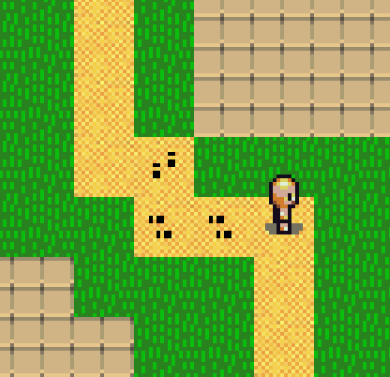
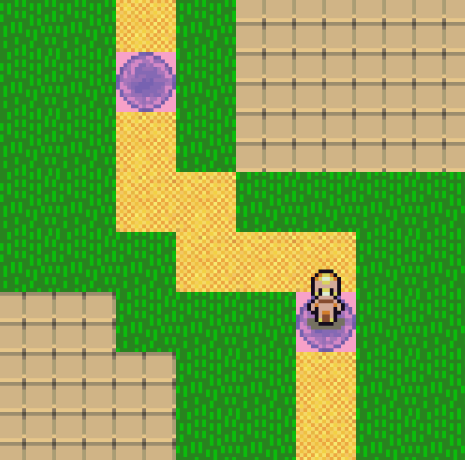

Implémentation d'une extension particule où quand le personnage se déplace, des particules de pas apparaissent ainsi que de la poussière. Il s'agit d'un système de particules où la particule est une structure de données qui contient une durée de vie, une image et une coordonnée.

Implémentation d'une extension de téléportation où le personnage peut placer des téléporteurs aux coordonnées où il se situe et peut se téléporter à travers ces téléporteurs.